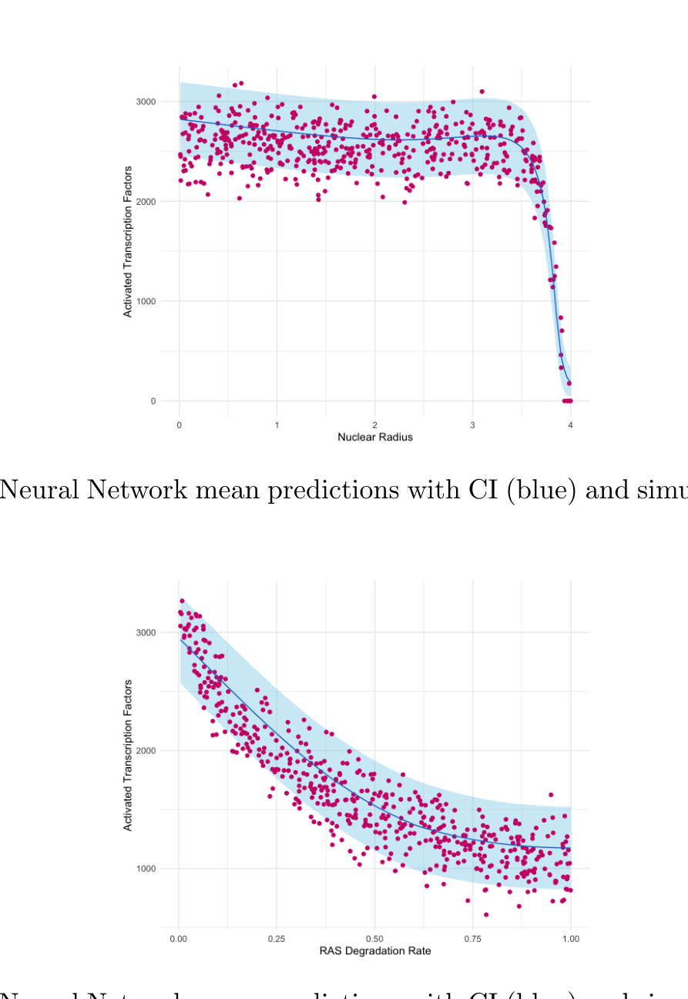
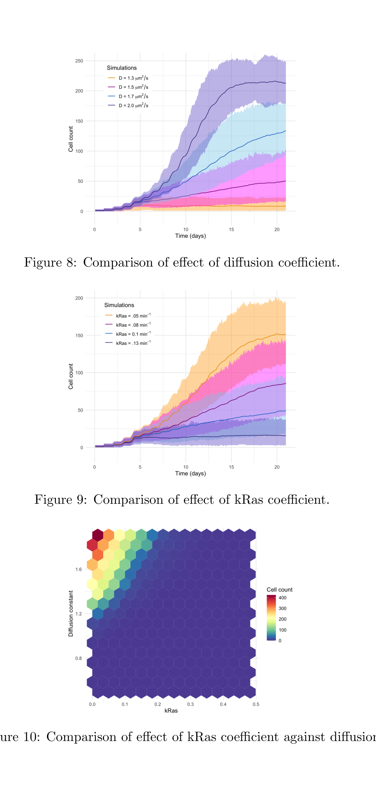

Author working-result snapshots associated with the study; not certified publisher figure panels.
Mechanistic surrogates reveal which physical properties regulate EGFR/ERK signalling
Detailed Brownian-dynamics simulations can resolve molecular spatial effects but are costly to run repeatedly. In work with a graduate student, we generated 10,000 simulated experiments and trained surrogate models relating cellular geometry and kinetic parameters to EGFR/ERK pathway responses.
Neural networks and random forests better approximated the simulated response than a generalized linear baseline. Interrogating the models helped identify relationships between cell and nuclear radii, protein diffusion, Ras inactivation, and downstream signalling activation.
The methodological contribution is a route from mechanistic simulation to fast, interpretable exploration of biological parameters. Predictions remain conditional on the mechanistic simulator and its assumptions.
Garcia & Bouchnita · BioSystems · 2025 ↗